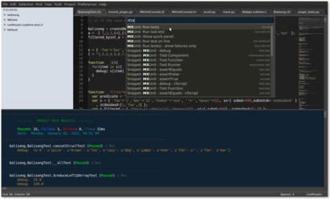

Sublime Text
Sublime Text-проприетарный текстовый редактор. Поддерживает плагины на языке программирования Python.Разработчик позволяет бесплатно и без ограничений ознакомиться с продуктом, однако программа уведомляет о необходимости приобретения лицензии.
Содержание
- Возможности
- Особенности
- История
- Sublime Text
- Sublime Text 2
- Sublime Text 3
- Sublime Text 4
- См.также
- Примечания
- Литература
- Ссылки
Возможности:
Некоторые возможности:
- Быстрая навигация (Goto Anything)
- Командная палитра (Command Pallete)
- API плагинов на Python
- Одновременное редактирование (Split Editing)
- Высокая степень настраиваемости (Customize Anything)
Поддержка языков
Sublime Text поддерживает большое количество языков программирования и имеет возможность подсветки синтаксиса для C, C++, C#, CSS, D, Dylan, Erlang, HTML, Groovy, Haskell, Java, JavaScript, LaTeX, Lisp, Lua, Markdown, MATLAB, OCami, Peri, PHP, Python, R, Ruby, Rust, SQL, TCL и XML.
В дополнение к тем языкам программирования, которые включены по умолчанию, пользователи имеют возможность загружать плагины для поддержки других языков.
